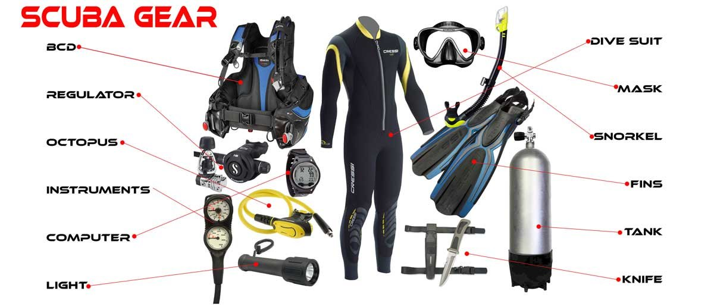
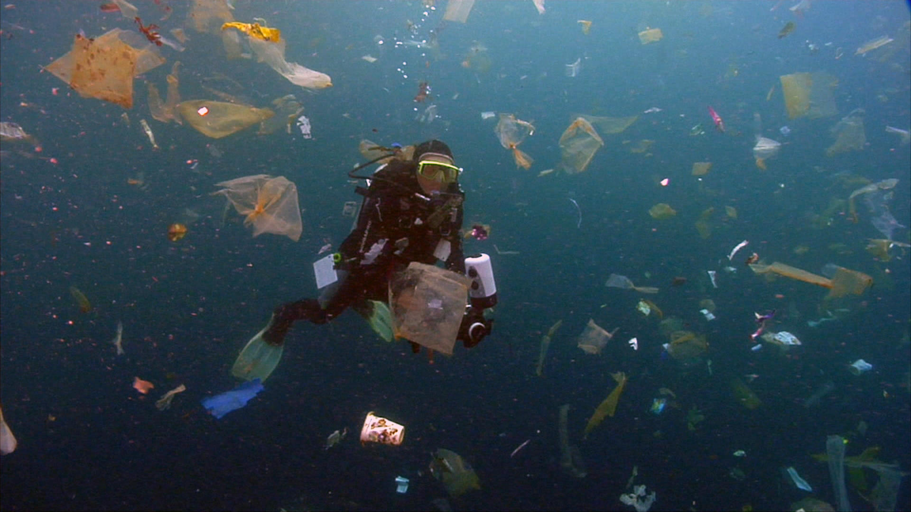

The Gallery offers a set of images that can help to deepen your understanding of scuba diving.
These images reference topics such as scuba diving history, equipment, procedure, training, and even how you can use these skills to help the world.
Image 1
1914, First dive suit with ball bearings which provided movement to a joint created by Chester MacDuffee. It was tbested in 214 feet of water.
Image 2
A display of the essential scuba diving gear necessary to complete a dive

Image 3
A diver performing a CESA or Controlled Emergency Swimming Ascent, the procedure for getting to the surface if you run out of air.
Image 4
This diver is cleaning up plastic, helping to remove the ocean of it's pollution.
Image 5
These 2 divers are exploring an underwater shipwreck.